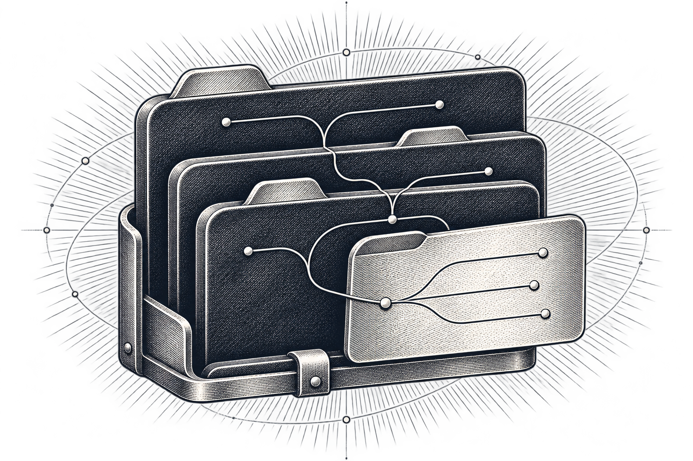
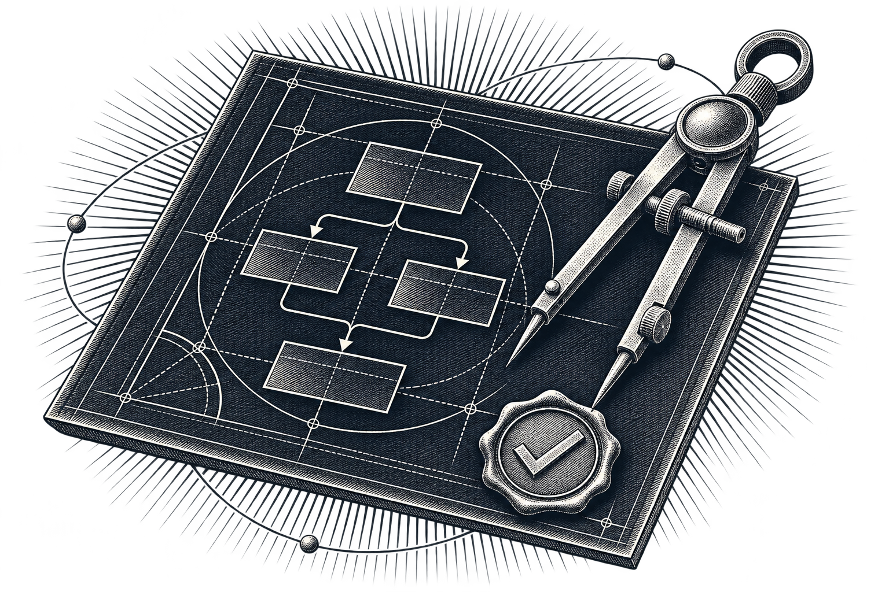

Specialist agents
Fourteen definitions cover exploration, bugs, refactors, review, security, dependencies, performance, docs, tests and browser work. In-process calls answer inside your task; background agents keep running while you read.
This is the full landing page transformed for AI agent readability. Toggle to Human for the visual presentation. Verify current behavior, versions, and limits against the docs, changelog, and source repository.
uv tool install --python 3.11 novacode-cli installs the latest release from PyPI.uv tool install --python 3.11 --force "novacode-cli[browser,voice,agents-server,server,bedrock,computer]". Keep all wanted extras when reinstalling; external runtimes and voice models may need separate setup.uv tool upgrade novacode-cli. To replace a Git-based installation, use uv tool install --python 3.11 --force novacode-cli.nova. Note: an installed copy is not a development checkout; to work on Nova itself use the source checkout (uv run nova as documented)./rooms project channels with agent DMs and a shared task board, an embedded Claude Code or Codex conversation per channel, and /council / /council web for proposals, ballots and a chairman's synthesis./dream consolidation and backups, plus a source-validated workspace knowledge cache (/cache)./prime Deep Work tracks define, investigate, implement, verify, challenge and deliver, and evaluates acceptance checks against real tool-call output.compress, decompress, search_context, acp_status)./onboard builds a local code graph with tours and change impact; Code Mode (eval) runs bounded JavaScript over eligible tools; /cc Command Center lists sessions by project and status; /loop schedules recurring work.VISION side-call for text-only models.~/.nova/agents/<agent>/memories/).~/.nova/agents/<agent>/memories/; user-readable/editable./rooms, and Council advisors.Limits/caveats: Feature availability depends on install extras, provider, platform, and configuration. Not a benchmark. Prefer docs/changelog/source for current behavior.
Give Nova a task in your repository. It investigates, plans, edits files and runs your checks — then reports what it observed, not what it intended. Memory lands in Markdown you can read, and other agents can join in their own channels.
Take a quick tour of the workspace before your first conversation.
Explain · Refactor · Build · Debug
parser · main
The sidebar brings together your codebase, tests, tools and agents. The project and branch sit underneath, so you can see where you are working.
Explain, Refactor, Build or Debug: pick the kind of work you have in mind, or describe your task directly.
Use the message input to describe the change, question or failure. Include the details Nova needs to begin.
A question, a tool call, an answer grounded in the output. Scroll through a real Nova session.
what changed on main this week?
git log --oneline -5
The largest change is async agents starting on demand in your project — no Docker.
These are the latest five commits; this is not filtered by week.
“What changed on main this week?” Start with what you want to understand, right in your terminal.
Nova runs git log --oneline -5. The command and its five commits appear in the conversation, so you can inspect the source of the answer.
Nova explains the biggest change: async agents now start on demand in your project, without Docker. This example reads the latest five commits; it does not filter by week.
NovaSay hello
Specialists, an embedded Claude Code or Codex channel, and a Council that argues before it recommends.
Independent work goes to specialists, background runs keep their own lane, and a project gets channels instead of one growing conversation.
Fourteen definitions cover exploration, bugs, refactors, review, security, dependencies, performance, docs, tests and browser work. In-process calls answer inside your task; background agents keep running while you read.
/rooms opens project channels, agent DMs and one shared task board. Nova can also run Claude Code or Codex from their installed CLIs in a channel: separate resumable conversations, attributed replies, approved handoffs.
/council web sends a decision brief to advisors who ask questions, vote on real options and disagree in public. A chairman reconciles the result and keeps minority concerns. Votes are advisory; you approve the outcome.
± Background agents need the agents-server extra. Rooms limit a project to two workers and six initial task turns; extensions need a separate owner decision. Teams and swarm scheduling stay experimental and off by default.
Review the parser change and check the nesting tests.
running — review parser edge cases
running — check nested-block regressions
Open a running task to inspect its activity. This capture uses the current Nova interface with demonstration content.
Review parser edge cases
Checking nested-list validation before reporting.
read src/parser.py
One unhandled nesting depth, reproduced in 2 tests.
The task names the work assigned to this specialist: reviewing parser edge cases. Its role and running status appear at the top of the view.
The preview brings together the specialist’s notes, tool calls and results. Here, a file read sits beside a note about checking nested-list validation.
Press Esc in Nova to return to the main session. Opening the preview lets you inspect the task without replacing the main conversation.
Useful notes live in files you can open, search, edit, or remove.
Preferences, topic notes and habits live in readable Markdown: an index, topic maps, project-scoped pages. Recall is visible — when notes enter a turn, the transcript names the source file.

Memory is ordinary text, not a hidden profile. Read it directly, correct a detail that changed, delete notes you no longer want Nova to use.
/dream consolidates the wiki with backups and reports broken links. /cache status shows the source-validated workspace cache behind repeated questions about this project.
Find the wiki in ~/.nova/agents/<agent>/memories/.
± Memory provides context; it does not prove a remembered claim is still true.
Read about memoryNova records what it ran, what it saw, and what it could not check.
Deep Work (/prime) keeps a task inside six checkpoints and separates the agent's own assessment from evidence produced by your tools.
Acceptance checks are written before normal tool work and bound to the real tool-call IDs of that run. Exit codes and literal output are evaluated mechanically, so a fabricated, missing or truncated result cannot pass.
Interrupted work stays paused, late results cannot repopulate a cleared request, and an unmet criterion is reported even when every phase finished.
The report, task history and check evidence persist with the session. /prime tasks, /prime checks and /prime resume <id> reopen them; project-scoped findings are shared across linked worktrees.
± Deep Work is opt-in: /prime on or --prime. Verification is only as good as the checks you define; an unverified result is labelled, not hidden.
This debugging example moves from reading the code to explaining a change and reporting the test output.
read parser.py · read tests/test_parser.py · search parse_block
The parser only walked one level.
14 parser tests, 27 block tests passing
changelog note — passing tests and a finished task are separate things
The tool-call group lists the parser, its tests and a search for parse_block. You can follow which files informed the diagnosis.
The explanation identifies a parser that only walked one level. The code excerpt illustrates recursive descent for nested blocks.
The example reports 14 parser tests and 27 block tests passing. The checklist still leaves the changelog note open: passing tests and finishing every task are separate things.
Read-only planning, approvals that fail closed, and isolation when you need it.
Plan mode keeps investigation read-only, approvals fail closed rather than open, and a risky change moves into its own Git worktree before anyone touches the original checkout.
Planning blocks edits, memory writes, command execution and calls routed through MCP or Code Mode — including when auto-approval is on. Executing a plan still needs your approval, and approved plans are saved with the project and in Nova's archive.
Tool policy, scoped path grants and explicit denies. A decision model can review routine calls, but uncertain or unavailable verdicts come back to you, and traversal, drive, UNC and device escapes are rejected.
EnterWorktreeTool moves the session into a fresh Git worktree and back without losing work; /worktree pairs one with a session. Code Mode runs bounded JavaScript over eligible tools, and its nested calls keep the same approval path.

When a tool call needs your decision, Nova shows the proposed action and the available choices. This is a demonstration of the current approval dialog.
python -m pytest tests/test_parser.py -q
Approve · Allow for session · Always allow · Auto-approve for this thread · Reject
arrows and Enter to select · y approves · n or Esc rejects
The approval request interrupts the conversation for a tool call that needs your input. The header row names this as a tool approval.
This example proposes python -m pytest tests/test_parser.py -q. Check the tool and its arguments before deciding whether it should run.
Use the arrow keys and Enter to select an option. y approves this call; n or Esc rejects it. Broader permission choices are listed separately in the dialog.
What a generic coding-agent checklist does not have. Every row prints its own limit, and optional or preview work says so.
| Capability | What it does | Needs / limits |
|---|---|---|
Project onboarding · /onboard | A persistent local code graph: searchable file and symbol explorer, dependency map, symbol inspector, guided tours, Q&A, and change-impact tracing for a symbol or path. | Static analysis; misses dynamic dependencies |
Code Mode · eval | Bounded JavaScript over eligible native and MCP tools, with variables reused across snippets in one conversation. Only the selected result reaches the model. | Composer toggle; no host imports or network |
Command Center · /cc | Sessions grouped by project, with status filters, search, details, measured token usage and live tab state. Left Arrow opens it from an empty composer. | Interactive TUI |
Session loops · /loop | Recurring work on an interval, a quoted cron schedule or a model-chosen wake-up, with instructions reloaded from loop.md each iteration. | A local owner tab; 72-hour default TTL |
| Lite Mode | Off, Caveman or Ponytail from the composer: terser prose, compact tool and web views, exact source recovery, or the smallest complete change instead of extra scaffolding. | Opt-in; no promised savings |
| Context compression | The active model folds completed ranges into summaries while exact originals stay searchable in the archive; /compact remains for manual use. | On by default; context_hierarchical |
| 14 interface styles | Home compositions from Dashboard to Minimal, Nova character art in Workbench and Studio, optional animated scenes, an opt-in side-by-side diff preview. | Animations can be paused |
| Artifacts and sharing | HTML, Markdown and dashboard results, updated in place with versions in a searchable collection, shared through a temporary Cloudflare URL. | cloudflared; public to link holders |
| Remote sessions | A Telegram topic or Discord thread per session, with phone-sized diffs, approvals answered in chat, and an optional Rootapp companion. | Bot, permissions, authorized senders |
| Voice and vision | Dictate requests, hear short spoken summaries of the final reply; a separate VISION side-call reads images for a text-only main model. | Voice extras; a vision-capable model |
| Local computer · preview | A session-owned QEMU Linux guest with a private local live view; the agent observes a screenshot and clicks, types or scrolls against the latest one. | computer extra + QEMU; real boot unverified |
Six releases that changed what the agent can do. Read it left to right.
Each plate is a real release, oldest first. Scroll to run the strip sideways; on a phone, swipe it. Every card is a link you can tab to.
Project channels, agent DMs and one shared task board; Claude Code and Codex run beside Nova in their own channel.
Release notesSix checkpoints from define to deliver, with acceptance checks bound to real tool-call output.
Release notesevalA local code graph with tours, Q&A and change impact, and one interpreter for eligible tools.
Release notesSessions grouped by project, with status filters, details and live tab state.
Release notesRecurring session work on an interval, a cron schedule or a model-chosen wake-up.
Release notesThe model folds completed ranges into summaries; exact originals stay searchable in the archive.
Release notesNova requires Python 3.11 or newer and uv. Install the command-line app, then run nova from your project. To work on Nova itself, use the source checkout instructions.
Windows, macOS and Linux · PyPI release
uv tool install --python 3.11 novacode-cliOptional · browser, voice, agents, server, Bedrock and computer
uv tool install --python 3.11 --force "novacode-cli[browser,voice,agents-server,server,bedrock,computer]"any platform · then run
novaRelease 1.2.20 is on PyPI. Upgrade with uv tool upgrade novacode-cli. Choose one of 18 hosted provider IDs or configure a local Ollama model.
± Extras install Python dependencies; voice models, browser binaries and computer runtimes may need separate setup. Keep all wanted extras when reinstalling. For changes to Nova itself, follow the source checkout instructions and use uv run nova.
The practical details for getting started.
Nova is an open-source coding agent for the terminal. Beyond reading a repository, planning, editing files and running your checks, it delegates work to specialists, keeps project channels alongside Claude Code and Codex, and reports verification evidence instead of a completion claim. Read the documentation.
In Markdown files under ~/.nova/agents/<agent>/memories/. You can read and edit these files yourself. Memory is context, not verification.
Tool approvals are configurable by operation. Plan mode lets you review an approach before implementation, and hard-coded denials cannot be disabled through the approval policy. See permission details.
18 hosted provider IDs plus local Ollama models, with independent roles for the main agent, subagents, async agents and a vision companion. Nova requires Python 3.11 or newer and runs on macOS, Linux, and Windows. Some providers need their own account or API credentials.
Yes. Specialist agents cover exploration, fixes, review, security, tests and more; /rooms adds project channels where Nova can also run Claude Code or Codex from their installed CLIs, and /council web gathers advisor proposals and ballots. Background agents need the agents-server extra, and agent teams stay experimental.
Deep Work (/prime) defines acceptance checks before implementation and evaluates them against real tool-call output, then reports unmet criteria and unverified work rather than a completion claim. See verification details.
Approval still applies. Memory still lands in files you can read. Delegated work keeps its own channel, and the first thing Nova does is look around before touching anything.
the emblem, struck
drag or use arrow keys to turn